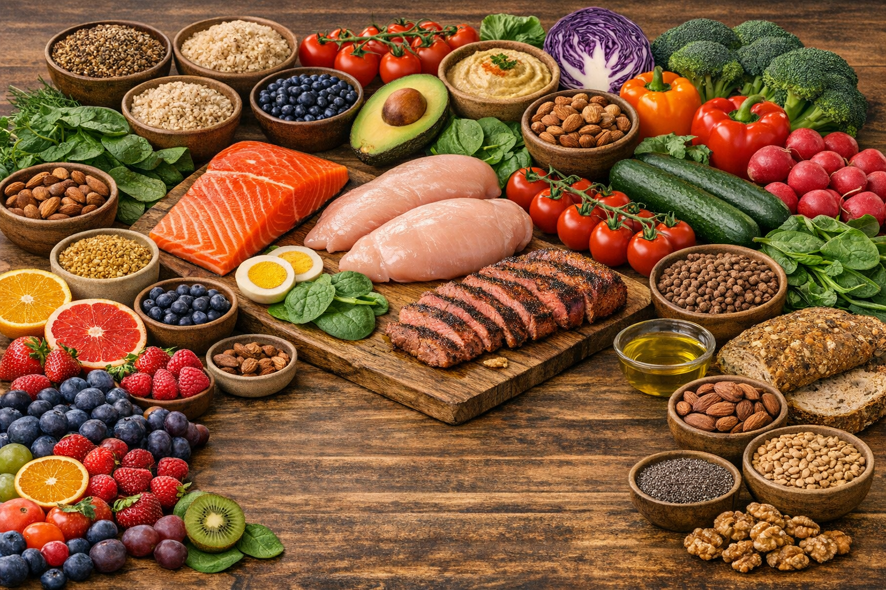
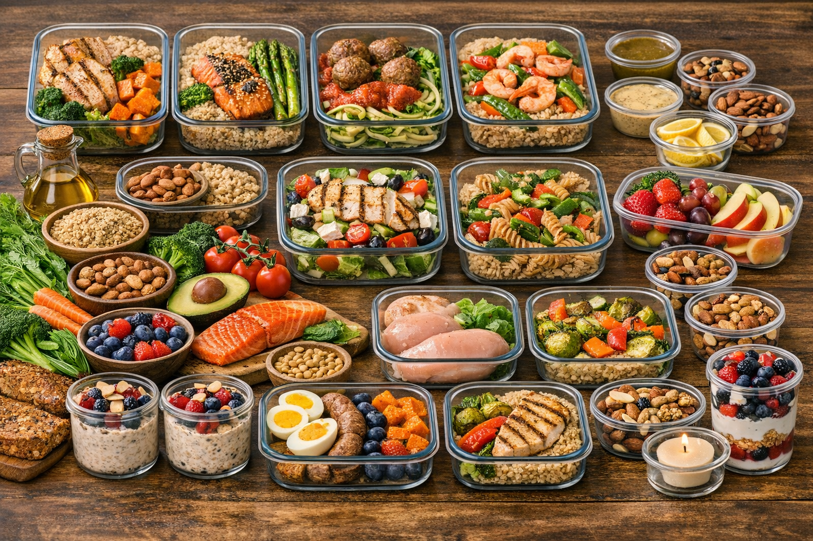
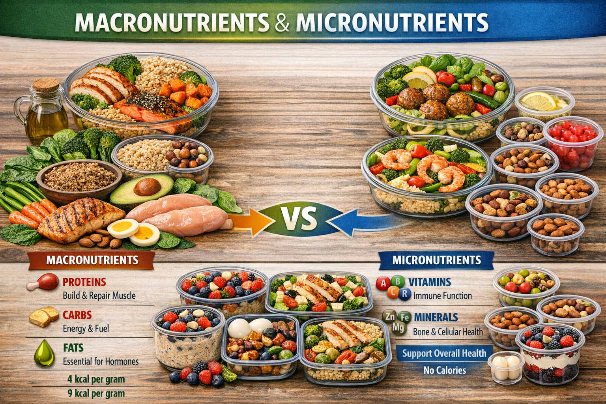
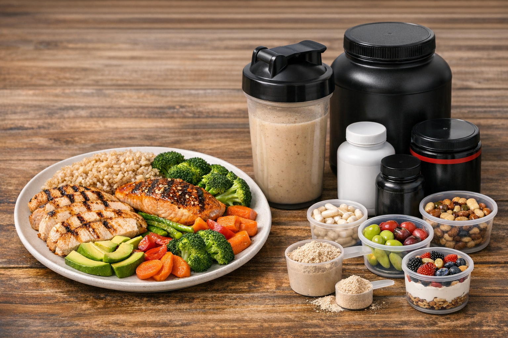

Nourish Your Body: Nutrition Guidance
At DESTI FITNESS & HEALTH, we understand that true wellness is built from the inside out. Nutrition is the cornerstone of your fitness journey, impacting everything from energy levels and recovery to muscle growth and mental clarity. We steer clear of fads and restrictive diets, focusing instead on sustainable habits and real, wholesome food.

Your Plate, Your Power
Discover personalized strategies to fuel your body, optimize performance, and achieve lasting health with our comprehensive nutrition services.
Our Holistic Nutrition Approach
We view nutrition not just as counting calories, but as understanding how food truly impacts your body, mind, and spirit. Our holistic approach considers your lifestyle, goals, preferences, and challenges to create a plan that nourishes you completely. We believe in:
- Whole Foods First: Emphasizing nutrient-dense, unprocessed ingredients.
- Mindful Eating: Cultivating awareness around hunger cues, satiety, and the joy of eating.
- Sustainable Habits: Building practical, long-term changes that fit YOUR life.
- Education & Empowerment: Giving you the knowledge to make informed decisions for yourself.
Personalized Meal Planning & Prep

Take the guesswork out of healthy eating! Our personalized meal plans are designed specifically for your dietary needs, preferences, and fitness goals. We also equip you with the skills and strategies for efficient meal prepping, making healthy choices convenient and consistent.
- Customized Meal Plans: Tailored to caloric needs, macronutrient ratios, and specific goals.
- Recipe Ideas & Inspiration: Delicious and easy-to-make healthy recipes.
- Grocery Lists: Streamlined shopping to save time and reduce waste.
- Meal Prep Strategies: Tips and tricks to plan, prepare, and store healthy meals for the week.
Nutritional Breakdowns & Understanding Food

Knowledge is power when it comes to nutrition. We'll help you understand the basics of macronutrients (proteins, carbohydrates, fats) and crucial micronutrients (vitamins, minerals) and how they impact your body. Learn to read labels, make smarter choices, and truly comprehend what you're putting into your body.
- Macronutrient Guidance: Understanding protein, carbs, and fats for your goals.
- Micronutrient Importance: The role of vitamins and minerals in health and performance.
- Food Label Literacy: How to interpret nutritional information effectively.
Fueling Muscle Growth: What Foods Matter & Supplements

Key Foods for Muscle Growth:
To support muscle repair and growth, a consistent intake of quality protein, complex carbohydrates, and healthy fats is essential. Prioritize:
- Lean Proteins: Chicken breast, turkey, fish (salmon, tuna), lean beef, eggs, Greek yogurt, lentils, beans, tofu.
- Complex Carbohydrates: Oats, brown rice, quinoa, sweet potatoes, whole-wheat bread, fruits, and vegetables.
- Healthy Fats: Avocados, nuts, seeds, olive oil.
The Role of Supplements:
While food is always first, supplements can play a supportive role when used wisely. We provide evidence-based guidance on:
- Protein Powder: Convenient for increasing protein intake.
- Creatine: Shown to improve strength and power output.
- Omega-3 Fatty Acids: For overall health and inflammation reduction.
- Multivitamins: To fill potential nutrient gaps.
*Disclaimer: Always consult with a healthcare professional or registered dietitian before starting any new supplement regimen.*
Ready to Transform Your Nutrition?
Let's create a personalized plan that works for you and your goals.
Book a Nutrition Consultation Read Our Nutrition Blog Posts